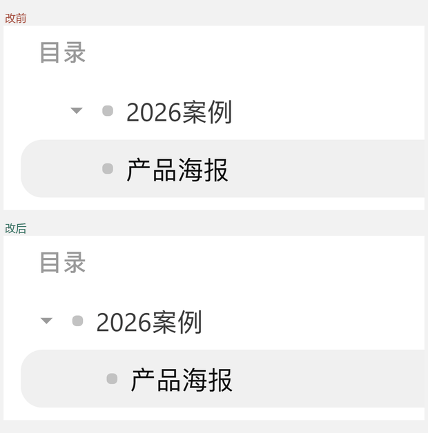

父子两层原本精确重合，层级看不出来

改前那一行「▾ • 2026案例」里，箭头、圆点、文字三个元素挤在一起， 而下面「产品海报」的圆点和文字，跟父行落在完全相同的横坐标上 —— 两层看起来是平级的，唯一区别是父行多挂了个箭头。
父行左侧那个 .tree-caret（12px 的箭头盒子）加上 6px 间距，
刚好等于 d1 和 d2 的 padding 差（38 − 20 = 18 = 12 + 6）。
箭头占掉的宽度被后续元素完全吃掉，缩进量归零。
换句话说：箭头不是缩进的一部分，它是把缩进抵消掉的东西。 这也解释了为什么它看起来「悬空」—— 左边一段空白，右边紧贴圆点， 既不对齐分组标题，也不构成任何列。
两条规则：
| 测量项 | 改前 | 改后 |
|---|---|---|
| 分组标题「目录」起点 | 31.5 px | 31.5 px |
| 父行箭头起点 | 44.7 px（悬空，不对齐任何列） | 31.3 px（与标题对齐） |
| 父行文字起点 | 79.3 px | 57.7 px |
| 子行文字起点 | 79.3 px ← 与父行完全重合 | 73.5 px |
| 父子缩进差 | 0.0 px | 15.8 px |
15.8px 与 CSS 设计值 16px 相差 0.2px，是字形左留白导致的取整误差 （「2026案例」以数字开头，「产品海报」以汉字开头，两者前置留白不同）。 视觉上 16px 已足够分层。
只影响侧栏「目录」这一块。真实后端返回的目录树是三层
（盘符 → 一级目录 → 二级目录），演示稿只画了两层，
但 d1 / d2 两条规则就是全部层级逻辑，
第三层沿用同一套缩进。
其他区域（类型、格式、时间、尺寸、颜色、显示）不受影响。